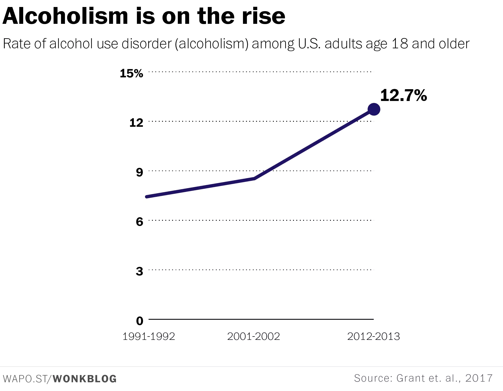

2 A 21st Century Approach to Addiction {#Relapse Prediction}
Keywords
NLP, machine learning, deep learning, addiction, sobriety, overdose, relapse
2.1 Society’s incomplete approach to addiction
Drug and alcohol addiction has far reaching consequences both for users, and society writ large: In 2016 it is estimated that 64,000 individuals died due to overdose, with societal costs in the hundreds of billions (National Institue on Drug Abuse). And while our understanding of the brain, and more importantly, human behvaior has progressed over the past 50 years, our primary method for helping individuals maintain sobriety has not. Despite all of humanities advancements the 12 step program continues to serve as the standard treatment option.

Addicts will often tell you that there are certain triggers that help precipitate relapse (e.g. Holidays), but in some cases they are only evident after the fact, or not evident to the human eye. Yet, could it be possible for deep learning to pinpoint these triggers via changes in behavioral patterns, and use this information to launch targeted interventions to reduce the probability of relapse? This proposal posits that the 12 step program is an incomplete solution, and that the efficacy of addiction treatment can be bolstered by capitalizing on the advances in data science and the near complete integration humans now have with technology.
2.2 Bringing modernity to addiction treatment.
To some extent a paradigm shift is already underway, with companies like Ginger.io and Talkspace bringing traditional mental health services to user’s mobile devices. However, there is a crucial shortcoming in these offerings: Current services focus on providing support reactively–only when the user requests it–rather than proactively. This approach will fail if either 1) the individual chooses not to reach out in their most vulnerable moment, or 2) the journey to that moment begins much earlier. A mobile app, granted permissions across the user’s device (texts, web history, app data, location, etc.), could resolve both problems through proactive intervention.
2.2.0.1 Product Vision
The polished product will be capable of monitoring user behavior in real time, and intervening if the backend algorithm suggests there is a high probability of relapse. The method(s) of intervention would be configurable, and would range from a pre-written push notification, to specific parties being notified (e.g. Sponsor). Additionally, applicable partnerships would be sought out to strengthen the value proposition of the product, such as providing listings for AA/NA meetings. The hope is that this offering will serve as an effective tool to be used either in a stand-alone fashion, or in conjuncture with other treatment options.
2.2.0.2 Stage 1 Roadmap & Approach
While the aforementioned product is the end goal, it cannot be built without further research. As such, the first stage of this project would omit engineering, and would instead focus on answering the following two questions:
1) Is targeted intervention immediately prior to a relapse an effective prevention strategy?
2) Are user's mobile activities predictive of relapse?
The answer to the first question is difficult to solve in a purely quantitative fashion, as a technological approach to sobriety is somewhat novel; however, qualitative evidence through surveys of addicts and addiction specialists may help shed light on this topic. The primary survey question of interest would be whether speaking with someone when on the verge of relapse was succesful in modifying behavior.
The second question is one better suited for analytics, however before any analysis can be done a data set would need to be constructed of mobile activity along with relapse times and locations; there are two main challenges to this step. First, the data would not be perfect, as dates/times of relapses would be derived from memory, and second, a volunteer population in the tens (or hundreds!) of thousands would need to be procured. These are legitimate roadblocks, however by partnering with hospitals, AA, and other institutions and anonymizing the data, it may be possible to obtain the necessary data, especially since volunteers would know the data is being used for a cause they are personally close to. Once the data is clean, a variety of data science techniques can be applied in an attempt to output a ‘relapse probability score’. Because there are so many different forms of mobile data, it would be best to bifurcate the data between quantitative data (location, date, time, etc.) and linguistic data (text content, web search history, etc.). The initial approach would be to use XGBoost (classifier) for the quantitative data, and a neural net for linguistic data. Assuming significant results are obtained, the project would proceed to stage 2, where the mobile applications and product backend are constructed.
2.3 A small step towards the future.
In the end, it may be possible that the dynamics of addiction are too complex to predict, or the trends too weak to be useful. And even given a perfect outcome in this first research stage, no solution will ever eliminate addiction, with this approach at best constituting an additional tool. However, given the scope of this problem, even minor improvements in the status quo translate to significant human and financial savings. Take a second to imagine what society would look like if the efficacy of our addiction treatment improved. Isn’t that a world worth pursuing?
2.4 Bibliography
National Institute of Drug Abuse. (2017, September 15). Overdose Death Rates. Retrieved March 09, 2018, from https://www.drugabuse.gov/related-topics/trends-statistics/overdose-death-rates
National Institute of Drug Abuse. (2017, April 24). Trends & Statistics. Retrieved March 09, 2018, from https://www.drugabuse.gov/related-topics/trends-statistics
Ingraham, C. (2017, August 11). One in eight American adults is an alcoholic, study says. Retrieved March 12, 2018, from https://www.washingtonpost.com/news/wonk/wp/2017/08/11/study-one-in-eight-american-adults-are-alcoholics/?utm_term=.76cf07a0edf3